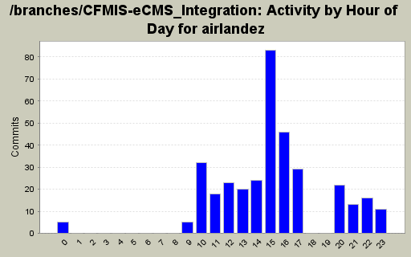
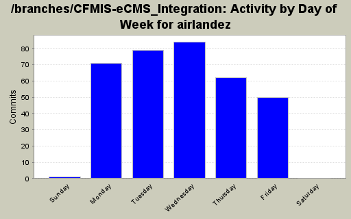
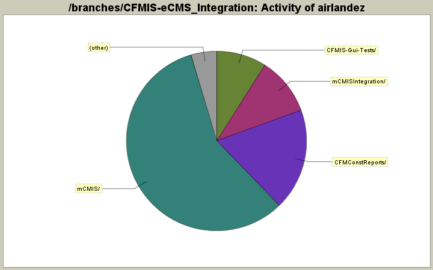

| Directory | Changes | Lines of Code | Lines per Change |
|---|---|---|---|
| Totals | 347 (100.0%) | 21024 (100.0%) | 60.5 |
| mCMIS/ | 168 (48.4%) | 12137 (57.7%) | 72.2 |
| CFMConstReports/ | 48 (13.8%) | 3859 (18.4%) | 80.3 |
| mCMISIntegration/ | 14 (4.0%) | 2186 (10.4%) | 156.1 |
| CFMIS-Gui-Tests/ | 61 (17.6%) | 1888 (9.0%) | 30.9 |
| mCMIS/styles/ | 5 (1.4%) | 397 (1.9%) | 79.4 |
| mCMIS/js/ | 2 (0.6%) | 250 (1.2%) | 125.0 |
| mCMIS/Model/DataLayer/ | 14 (4.0%) | 182 (0.9%) | 13.0 |
| mCMIS/Model/DataLayer/History/ | 5 (1.4%) | 104 (0.5%) | 20.8 |
| mCMIS/UserControls/ | 10 (2.9%) | 21 (0.1%) | 2.1 |
| mCMIS/images/ | 17 (4.9%) | 0 (0.0%) | 0.0 |
| SQL/ | 1 (0.3%) | 0 (0.0%) | 0.0 |
| BumbleBee/ | 2 (0.6%) | 0 (0.0%) | 0.0 |

Bug 589 - Updated message for missing method of delivery to "Must Select a Method of Delivery."
3 lines of code changed in 3 files:
trying to fit on one page
6 lines of code changed in 2 files:
trying to fit on one page
2 lines of code changed in 1 file:
passed date params to subSchedule
28 lines of code changed in 2 files:
completely rewrote report using a subreport. the subreports uses SQL's unpivot to transpose the schedule columns into rows to enable us to loop through the schedule items and remove any null schedule dates (actually Unpivot auto does this)
23 lines of code changed in 1 file:
added SubSchedule
14 lines of code changed in 2 files:
subreport for RepAccomplishments
144 lines of code changed in 1 file:
Displaying Design FY only when DBB
4 lines of code changed in 1 file:
Bug 657
2 lines of code changed in 1 file:
Bug 656 - renamed a field
1 lines of code changed in 1 file:
Moved location of "No Records Found" message
2 lines of code changed in 1 file:
Fixed bugs 652, 653, 654
31 lines of code changed in 1 file:
fixed syntax error
4 lines of code changed in 1 file:
made headers wrap a little better
3 lines of code changed in 1 file:
Added all actual fields to report. have a syntax error in the Where
1034 lines of code changed in 1 file:
Changed Base Date (B) to Prospectus Date (P)
11 lines of code changed in 1 file:
Fixed syntax error in sql
1 lines of code changed in 1 file:
Modified SQL Statement to find only Major Project - splitting statement into Union for Project and Subprojects. Pulling amt_budget from CostEstimate now instead of Initial Cost.
28 lines of code changed in 1 file:
Updated from construction_advertisement to award_contract
10 lines of code changed in 1 file:
Updated re bug 643 for printing on 8.5x11
3 lines of code changed in 1 file:
(150 more)